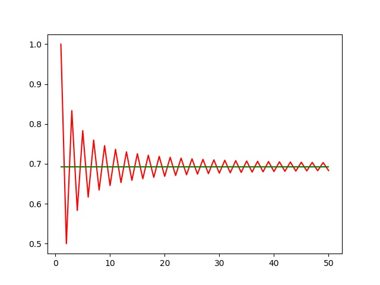

Carl Bender Mathematical Physics Lecture3 & Lecture4 Note
Information
- 原出处: https://www.perimeterinstitute.ca/video-library/collection/11/12-psi-mathematical-physics
- 可以看自动生成的字幕: https://www.youtube.com/playlist?list=PLzcd6SoIscwjHuWRE38UXWG92uq0Sy4UF
- Bilibili: https://www.bilibili.com/video/BV1w4411q7x6?from
search&seid7852838902448285010 - Book: Carl M. Bender, Steven A. Orszag, Advanced Mathematical Methods for Scientists and Engineers I Asympotic Methods and Perturbation Theory, 1999
Keywords
Branch cuts. Shanks transform. Acceleration of convergence. Richardson extrapolation. Summing a divergent series. Euler summation. Borel summation. Generic summation machines.
Branch Point And Branch Cut
以 $\sqrt{z}$ 为例讲解, 非常清晰!
Shanks Transform
Shanks Transform 的作用是
Accelerate the convergence of a series that was already converging.
例如
$$\begin{align} \label{eq:log2} \ln 2 = 1 - \frac{1}{2} + \frac{1}{3} - \frac{1}{4} + \cdots = 0.693 147 2\cdots \end{align}$$
Shanks Transform 能够让收敛变得更快.
Mr. Shanks syas, let's make a model of this series.
把这种振荡的级数 model 一下.假设级数 $S_N$ 有如下的形式
$$\begin{align} S_N = L + A B^N \end{align}$$其中 $-1 < B < 0$ , $L$ 代表 limit, 也就是级数收敛的结果. 这个 model 并不完全和 (\ref{eq:log2}) 一致, 只是它们的模式一致.我们只关心级数最终收敛的结果, 也就是 $L$ , 我们可以通过下面的式子把 $L$ 解出来
$$\begin{align} S_{N-1} =& L + A B^{N-1}\\ S_N =& L + A B^N \\ S_{N+1} =& L + A B^{N+1} \end{align}$$可得
$$\begin{align} L = \frac{S_N^2 - S_{N+1}S_{N-1}}{2 S_N - S_{N-1} - S_{N+1}} \end{align}$$如果我们对级数 (\ref{eq:log2}) 做多次 Shanks transform, 结果如下 [[file:./2020-10-07-专业笔 记-CarlBenderMathematicalPhysicsLecture3and4/ShanksTrans.jpg]] code: [[file:./2020-10-07-专业笔 记-CarlBenderMathematicalPhysicsLecture3and4/ShanksTrans.py]]
效果相当明显(不过还是像 Bender 一样列表, 才能够更清晰地看出精度的不断增加. 画这 个图是为了把算法写出来).
对于 Shanks transform, 有同学提问, 如何证明它能够对这样级数加速收敛, Bender 如 是回答
Some summation theory partially rigorous but mostly not. It is very powerful and works in places where people cannot even justify why it is working.
并说它在这门课所要教的是
Cutting-edge mathematical physics. Very useful mathematical physics.
Richardson Extrapolation
以级数
$$\begin{align} S = \sum_{n=1}^{\infty} \frac{1}{n^2} = \frac{\pi^2}{6} = \zeta(2) \end{align}$$为例. 讲解如何用 Richardson extrapolation (理查德森外推法) 对不断逼近, 但是收敛 很慢的级数进行加速.
首先说明它收敛很慢. 计算到第 $N$ 项的误差为
$$\begin{align} S - S_N = \sum_{N+1}^{\infty} \frac{1}{n^2} \sim \int_N^{\infty} \frac{\mathrm{d}n}{n^2} \sim \frac{1}{N} \quad (\mathrm{as} \, N\to \infty) \end{align}$$也就是说, 计算到第 $1000$ 项, 也只达到 $\frac{1}{1000}$ 的精确度. 如果想到精确到 小数点后面十几位, 计算量就变得相当大.
Richardson extrapolation is a technique for extrapolating a sequence $S_N$ to the limit of that sequence.
与 Shanks transform 类似的做法, 对这种收敛形式的级数 makes a model
$$\begin{align} S_N = S + \frac{a}{N} + \frac{b}{N^2} + \frac{c}{N^3} + \cdots \end{align}$$如果保留到一阶, as $N\to \infty$
$$\begin{align} S_{N } \sim & S + \frac{a}{N} \\ S_{N+1}\sim & S + \frac{a}{N + 1}\\ \end{align}$$两边同乘 $N$ 以及 $N + 1$ , 然后两式相减(not care $a$), 可以解出
$$\begin{align} R_1 \equiv S = (N + 1)S_{N + 1} - N S_N \end{align}$$其中 $R_1$ 代表 first order Richardson. 类似地可以做二阶, 结果
$$\begin{align} R_2 \equiv \frac{N^2S_N - 2(N + 1)^2S_{N + 1} + (N + 2)^2 S_{N + 2}}{2} \end{align}$$以及更高阶. 下图是二阶的结果 [[file:./2020-10-07-专业笔 记-CarlBenderMathematicalPhysicsLecture3and4/Richardson.jpg]] code: [[file:./2020-10-07-专业笔 记-CarlBenderMathematicalPhysicsLecture3and4/Richardson.py]]
Richardson extrapolation 在数值积分中有很多应用, 如 Simpson's rule 是 trapezoid rule 的一阶 Richardson. Romberg integration 是 trapezoid rule 的更高阶的 Richardson.
Summing Divergent Series
Shanks transform 和 Richardson extrapolation 都是对本来就已经收敛的级数进行加速. 下面讨论如何 summing divergent series. 比如
$$\begin{align} &1 - 1 + 1 - 1 + 1 \cdots \label{div} \\ &1 + 2 + 4 + 8 + 16 \cdots \\ &1 + 1 + 1 + 1 + 1 \cdots \\ &1 + 0 - 1 + 1 + 0 - 1 + 1 + 0 - 1\cdots \\ &1 + \frac{1}{2} + \frac{1}{3} + \frac{1}{4} \cdots = \zeta(1) \label{eq:zeta1} \end{align}$$首先, 用 (\ref{eq:zeta1}) 来说明
Some divergent series REALLY sum up to infinity -- this is perfectly OK!
(\ref{eq:zeta1}) 可以对应物理图像, 将质量均匀的砖一块一块地摞, 最多能伸出多远. 如图 file:./2020-10-07-physics-CarlBenderMathematicalPhysicsLecture3and4/zeta1.gif Geogebra 在线示意: https://www.geogebra.org/m/gxzshmzr 将砖自上而下的放, 每次放砖, 使砖的右侧对准上面所有砖头的重心, 那么伸出的长度就是 $1 + \frac{1}{2} + \frac{1}{3} + \cdots$ , 而重心始终保持稳定, 不会倒. 因为 $\zeta(1)$ 这个级数是发散的, 那么按照这种摞法, 只要够高, 砖头就会伸出无穷远. 这个非常有意思!
对于一个无穷级数来说, 不能够交换各项的顺序, 否则会改变他们的值. 比如前面提到的
$$\begin{align} \ln 2 = 1 - \frac{1}{2} + \frac{1}{3} - \frac{1}{4} + \cdots = 0.693 147 2\cdots \end{align}$$如果我们任意交换各项的顺序, 我们可以让它收敛到任意实数. 可以给一个不收敛的级数求 和安排一个有意义的数字.
Euler Summation (Machine)
首先, 最简单的方法是 Euler summation. 假设 $\sum_{n=0}^{\infty}a_n$ 不收敛. 那么构造函 数 $f(x) = \sum_{n=0}^{\infty}a_nx^n$ , 如果它在 $|x| < 1$ 时是收敛的, 那么定义
$$\begin{align} E \equiv \lim_{x\to 1} f(x) \end{align}$$例如, 对于 series
$$\begin{align} 1 - 1 + 1 - 1 + 1 \cdots \end{align}$$构造
$$\begin{align} f(x) = 1 - x + x^2 - x^3 + \cdots = \frac{1}{1 - x} \end{align}$$那么
$$\begin{align} E \equiv \lim_{x\to 1} f(x) = \frac{1}{2} \end{align}$$Borel Summation (Machine)
Borel Summation 比 Euler Summation 更加 powerful.
由 $\Gamma$ 函数的定义我们知道
$$\begin{align} \frac{\int_0^{\infty}\mathrm{d}t\cdot e^{-t}t^n}{n!} = 1 \end{align}$$那么对于级数 $\sum_{n=0}^{\infty}a_n$ 构造
$$\begin{align} B \equiv \int_0^{\infty}\mathrm{d}t\cdot e^{-t}\frac{ t^n a_n}{n!} \end{align}$$如果也把它用在级数
$$\begin{align} 1 - 1 + 1 - 1 + 1 \cdots \end{align}$$上, 会发现 $B=\frac{1}{2}$ , 和 Euler machine 的结果是相同的!
Generic Summation Procedure (Machine)
接下来构造一种普适的方法 $\mathcal{S}(a_0 + a_1 + a_2 + \cdots) = S$. 但是不给出具体的 操作过程, 只给出它应该满足的两条性质
- prop #1 : $\mathcal{S}(a_0 + a_1 + a_2 + \cdots) = a_0 + \mathcal{S}(a_1 + a_2 + a_3 + \cdots)$ - prop #2: linearity $\mathcal{S}\left(\sum(\alpha a_n + \beta b_n)\right) = \alpha \mathcal{S} (\sum a_n)+ \beta \mathcal{S}(\sum b_n)$
例如, 我们还是将它用在级数
$$\begin{align} 1 - 1 + 1 - 1 + 1 \cdots \end{align}$$上.
$$\begin{align} S = &\mathcal{S}(1 - 1 + 1 - 1 + 1 \cdots) \\ = & 1 + \mathcal{S}( - 1 + 1 - 1 + 1 \cdots) \quad \mathrm{prop1} \\ =& 1 - \mathcal{S}(1 - 1 + 1 - 1 + 1 \cdots) \quad \mathrm{prop2} \\ =& 1 - S \end{align}$$可得 $S = \frac{1}{2}$ , 是和前面一样的结论.
再如, 级数
$$\begin{align} 1 + 0 - 1 + 1 + 0 - 1 + 1 + 0 - 1\cdots \end{align}$$如果用 Euler machine
$$\begin{align} E = & \lim_{x\to 1} f(x) = \lim_{x\to 1} 1 - x^{2} + x^3 - x^5 + x^6 \cdots \\ =& \lim_{x\to 1} (1 + x^3 + x^6 + x^9\cdots) - (x^2 + x^5 + x^8 \cdots) \\ =& \lim_{x\to 1} \frac{1}{1 - x^3} - \frac{x^2}{1 - x^3} \\ = & \frac{2}{3} \end{align}$$注意第三个等号交换了各项的顺序, 这对于 Taylor 级数来说是没问题的. 可以看出, 这个 级数中有没有零是很关键的, 这说明求和时, 不能够用结合律把某些项加起来再求和.
如果用 Generic machine
$$\begin{align} S = & \mathcal{S}(1 + 0 - 1 + 1 + 0 - 1 + 1 + 0 - 1 \cdots) \\ = & 1 + \mathcal{S}( 0 - 1 + 1 + 0 - 1 + 1 + 0 - 1 \cdots) \quad \mathrm{prop1} \\ = & 1 + \mathcal{S}( - 1 + 1 + 0 - 1 + 1 + 0 - 1 \cdots) \quad \mathrm{prop1} \\ \end{align}$$把三个等号后面的式子相加, 并用 prop#2
$$\begin{align} 3S = 2 + \mathcal{S}\left( (1 + 0 - 1) + (0 - 1 + 1) + (-1 + 1 + 0)\cdots \right) = 2 \end{align}$$因此 $S = \frac{2}{3}$ , 和 Euler machine 的结果相同.
Commentment
Bender 在 Lecture 4 的最后做了精彩的评述, 大意如下:
讲这些对不收敛的级数求和, 是为了用于微扰论.
微扰论将一个 hard problem 转化一无穷多非常简单的问题. 但是这些级数是不收敛的, 因 此我们需要用到这些方法来对它求和.
比如我们想要用微扰求解一个问题, 它的 answer 是 $\frac{1}{1 + \epsilon}$ , 但是它很难, 我们没法直接得到 $\frac{1}{1 + \epsilon}$ 这个答案. 只能用微扰来解, 而通过微扰, 我们得 到的结果是 $\sum(-1)^n \epsilon^n$ . 但是我们想要是 $\epsilon=3$ 时的结果, 那这是一个发散的求和. 那我们 play 一个 trick. 将 $\epsilon$ 取成 $|\epsilon| < 1$ 的值, 那就得到了 $\frac{1}{1 + \epsilon}$ , 那把 $\epsilon=3$ 代入就得到了答案 $\frac{1}{4}$ . $\sum(-1)^n \epsilon^n$ 只是答案的一 种表示, 并不是要我们真的去求和. 我们要做的是用一种方法将答案从求和的表示, 得到它 真正的值.
Summary
微扰得到的是不收敛的级数, 我们因此发展了用来求不收敛的级数的方法.